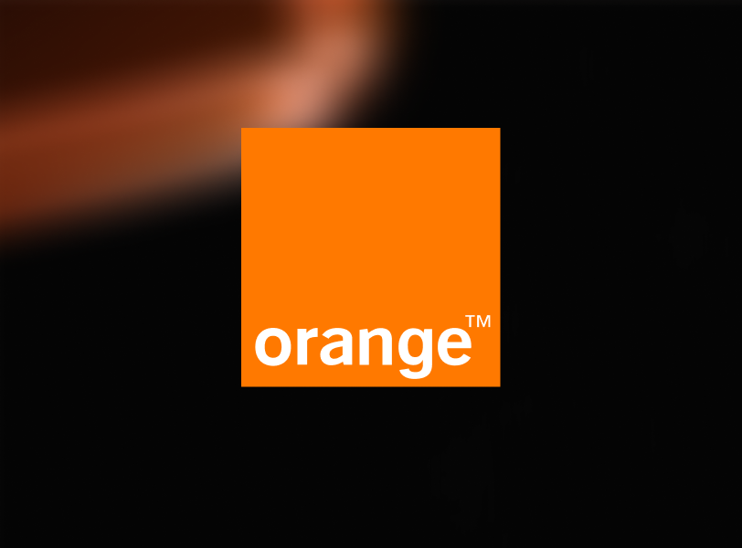
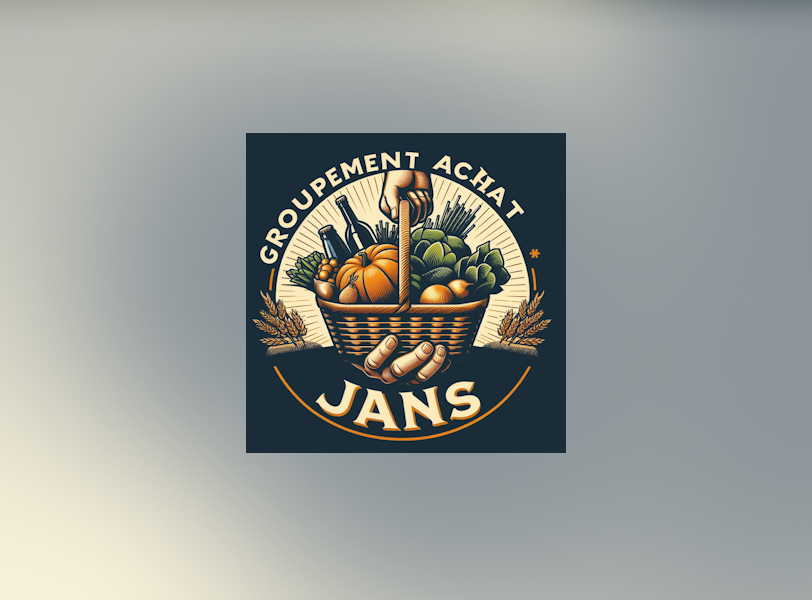

Assistante administrative / Secrétaire / Agent d’accueil
Compétences
Ce que j’apporte au quotidien d’un secrétariat
Gestion administrative
- Traitement et suivi de dossiers (comité d’éthique : délai de 3 semaines)
- Comptes rendus de relecture de mémoires
- Classement, archivage, structuration de l’information (Confluence)
- Montage d’un dossier prévisionnel (budget, aides, démarches)
- Respect de la confidentialité et du RGPD
Relation humaine & accueil
- Accueil physique et téléphonique du public
- Écoute, reformulation, gestion de situations délicates
- Accueil de publics fragiles (PSSM, bénévolat handicap)
- Travail en équipe avec des profils variés
Organisation & planning
- Gestion d’agenda et de rendez-vous
- Organisation de réunions et d’événements (préparation, réservations, coordination)
- Co-organisation d’une journée de prévention santé avec 5 partenaires (février 2027)
- Priorisation et anticipation des imprévus
- Suivi des échéances et des délais
Rédaction & communication
- Rédaction de documents structurés (plans, rapports, synthèses)
- Présentations PowerPoint
- Transmission d’avis et de comptes rendus
- Prise de parole en public (table ronde, journée régionale)
Outils numériques
- Word, Excel, PowerPoint, Outlook
- Confluence, Jira (suivi et indicateurs)
- Outils d’IA pour gagner du temps
Langues
- Français : langue maternelle
- Anglais : niveau A2, en progression (Wall Street English, jusqu’à septembre 2026)
Parcours & compétences transversales
Ce que mon parcours apporte à un poste de secrétariat
Coiffeuse indépendante — Gestion administrative, planification et accueil
Métier
Voir plusRéduire
Coiffeuse indépendante — Gestion administrative, planification et accueil
MétierContexte : 30 ans de métier, dont 15 ans en salon puis 15 ans comme coiffeuse indépendante à domicile. En tant qu’indépendante, j’étais à la fois la coiffeuse, l’accueil, le planning et le bureau : toute l’organisation et la gestion de l’activité reposaient sur moi.
Ce que ce métier m’a appris, côté secrétariat :
- accueillir, écouter et reformuler la demande du client
- tenir un agenda de rendez-vous et gérer les annulations et imprévus
- organiser mes tournées à domicile (itinéraires, horaires, matériel)
- gérer l’encaissement et le suivi de l’activité
- assurer seule la gestion administrative de mon activité d’indépendante
- fidéliser une clientèle sur la durée, avec discrétion et bienveillance
Dossier prévisionnel : j’ai monté un dossier complet de création de micro-entreprise : statut juridique, hypothèses, besoins de financement, chiffre d’affaires et charges prévisionnels, aides (ACRE), assurances. Un vrai travail de gestion administrative et budgétaire.

Orange — Stage en environnement professionnel
Stage
Voir plusRéduire

Orange — Stage en environnement professionnel
StageContexte : stage au sein d’une équipe Orange travaillant sur un portail interne de pilotage de la sécurité. Une immersion dans une grande entreprise, avec ses process, ses outils et ses rituels d’équipe.
Compétences transférables au secrétariat :
- participation aux réunions quotidiennes et coordination avec plusieurs interlocuteurs (UI/UX, développeurs, Product Owner, tuteur)
- suivi d’indicateurs et reporting dans Jira (avancement, anomalies, corrections)
- rédaction et structuration de documents de suivi
- respect des règles et des normes (accessibilité RGAA, 106 critères)
- mise en place d’une organisation pérenne pour l’équipe
CER (Comité d’Éthique de Recherche)
Relecture, comptes rendus et suivi de dossiers
Engagement
Voir plusRéduire
CER (Comité d’Éthique de Recherche)
Relecture, comptes rendus et suivi de dossiers
Engagement
Mission : évaluer les projets de recherche (mémoires, publications, études) qui nécessitent un avis éthique, en binôme professionnel / partie civile.
Un circuit de dossier très proche du secrétariat :
- réception et relecture des dossiers (mémoires, publications) selon une grille d’évaluation définie
- rédaction d’un compte rendu de relecture pour chaque mémoire évalué
- respect d’un délai de 3 semaines pour rendre chaque évaluation
- transmission des remarques à l’autre rapporteur et à la présidente
- compilation des avis communiqués à l’investigateur (favorable, sous réserve, défavorable)
- confidentialité stricte : RGPD, consentement éclairé, anonymisation, stockage sécurisé

Groupement d’achat Janzé — Documentation structurée
Partenariat

Groupement d’achat Janzé — Documentation structurée
PartenariatContexte : préparation et structuration d’une démarche complète pour le site d’un groupement d’achat, organisée dans un espace Confluence.
Ce que j’ai produit :
- un document de référence structuré : objectifs, périmètre, planification, risques, approbations
- une arborescence claire pour retrouver l’information rapidement
- un suivi des points à traiter et de leur avancement
- des schémas pour rendre l’information lisible par tous
Trek Tro Breiz — Organiser, coordonner, se dépasser
2 jours · entre amies · Bretagne
Projet perso
Voir plusRéduire
Trek Tro Breiz — Organiser, coordonner, se dépasser
2 jours · entre amies · Bretagne
Projet perso
Un projet mené de A à Z, et la preuve que l’organisation est une seconde nature.
Ce que j’ai produit :
- un PowerPoint de préparation couvrant l’ensemble du projet
- des réunions de préparation avec le groupe
- un programme de préparation physique
- l’organisation des étapes et des randonnées
- la réservation et la coordination des hébergements
- l’anticipation et la gestion des imprévus sur le terrain
Ce que j’en retiens : je ne subis pas l’organisation, je la cherche. Planifier, réserver, anticiper, ajuster en temps réel : c’est exactement ce qu’on attend d’une assistante.
Formation en informatique (ENI) — Un atout numérique
Formation
Voir plusRéduire
Formation en informatique (ENI) — Un atout numérique
FormationContexte : formation suivie à l’ENI (Chartres-de-Bretagne), avec un projet en trinôme mené en mode Agile.
Ce que j’en garde pour le secrétariat :
- une aisance avec les outils numériques et collaboratifs
- la rigueur dans la vérification : relire, contrôler, ne rien laisser passer
- l’habitude de documenter et de tracer chaque action
- l’organisation du travail en équipe : tâches, priorités, échéances, points d’avancement
Mon portfolio informatique est toujours en ligne : voir le portfolio informatique
Mes engagements
Quelques engagements et activités qui me tiennent à cœur
CCAS d’Andouillé-Neuville
Membre du CCAS · organisation d’une journée de prévention
Engagement
Voir plusRéduire
CCAS d’Andouillé-Neuville
Membre du CCAS · organisation d’une journée de prévention
Engagement
Contexte : le CCAS met en œuvre l’action sociale de la commune : aides aux habitants, accompagnement des personnes âgées, des familles et des personnes en difficulté.
Mon rôle de membre :
- participer aux réunions du CCAS
- apporter un autre regard, nourri de mes expériences professionnelles et de mes rencontres de ces dernières années
- faire remonter les besoins de la commune et de tous ses citoyens
Ma conviction : chaque citoyen peut devenir une ressource pour quelqu’un.
AN’Gagés contre le cancer | 5 février 2027
Projet en cours : dans le cadre du CCAS, je co-organise avec deux habitantes une journée de sensibilisation et de prévention du cancer à Andouillé-Neuville. Notre objectif : informer, prévenir, accompagner, sans tabou, et faire savoir que des ressources existent près de chez nous.
Le programme de la journée :
- prévenir et dépister avec le CEMonBus du centre Eugène Marquis (dépistage, alcool, tabac, alimentation, activité physique), avec un bilan prévention de 45 minutes sur inscription
- faire connaître les ressources, avant, pendant et après la maladie, et pour les proches
- libérer la parole : ateliers, témoignages et temps festifs
- une conférence sur invitation pour les chefs d’entreprise, sur l’accompagnement d’un salarié malade et son retour à l’emploi
Ce que l’organisation me demande :
- coordonner les partenaires : centre Eugène Marquis, Maison Jaïa, Réseau des bénévoles de LADAPT, Ligue contre le cancer, CCAS
- rédiger la présentation du projet et les supports à destination des habitants et des entreprises
- rechercher des mécènes et des sponsors, et construire le budget
- préparer la logistique : lieu, horaires, intervenants, inscriptions
- organiser la collecte des dons, reversés à la Maison Jaïa et à la Ligue contre le cancer
Réseau des Bénévoles LADAPT — Ille-et-Vilaine
Engagement
Voir plusRéduire
Réseau des Bénévoles LADAPT — Ille-et-Vilaine
EngagementLe réseau des bénévoles de LADAPT soutient les personnes en situation de handicap et leurs familles depuis plus de 25 ans : parrainage, accompagnement vers l’emploi, sensibilisation.
Actions en Ille-et-Vilaine :
- soutien à l’insertion professionnelle : parrainages, accompagnements personnalisés, entretiens-conseils
- participation à des événements : SEEPH, Forum emploi, Job Dating, Handicafé
- travail en réseau pour le suivi des parrainés et le partage d’expérience
Grâce au réseau : j’ai pu me former aux Premiers Secours en Santé Mentale (PSSM), pour mieux accueillir et orienter les personnes en situation de fragilité.
Témoignages — OncoBretagne & LADAPT
Témoignage
Voir plusRéduire
Témoignages — OncoBretagne & LADAPT
Témoignage
OncoBretagne — Journée régionale des Soins Oncologiques de Support
22 mars 2024, Palais des Congrès de Lorient. J’ai été invitée à partager mon vécu des soins de support devant des professionnels de santé, soignants et patients, pour encourager chacun à ne pas avoir peur d’y aller.
LADAPT — Convention nationale Handicap & emploi 2026
Table ronde avec LADAPT, France Travail, Cap emploi, l’Agefiph et le FIPHFP, pour témoigner de ce que le Dispositif de Financement d’Accompagnement (DFA) apporte concrètement : coordination avec l’école, aménagements de poste, suivi, préparation des examens.
Mission humanitaire — Monplaisir Solidarité
Santé bucco-dentaire · villages de montagne · Afrique
Humanitaire
Voir plusRéduire
Mission humanitaire — Monplaisir Solidarité
Santé bucco-dentaire · villages de montagne · Afrique
Humanitaire
Contexte : mission de terrain dans des villages de montagne en Afrique : prévention pour les mamans et les enfants, et soins bucco-dentaires dans des zones avec peu d’accès aux soins.
Actions concrètes :
- sensibilisation des enfants et des mamans au brossage des dents
- distribution de brosses à dents et de dentifrice
- accueil et orientation vers le dentiste : diagnostic, soins
- suivi individuel avec identifiant unique, statistiques transmises au ministère de la Santé
Ce que j’en retiens : un suivi administratif rigoureux (identifiant unique, statistiques, reporting) est ce qui permet de mesurer, décider et améliorer, sur le terrain comme au bureau.
Contact
Pour échanger sur un poste, un projet ou une opportunité